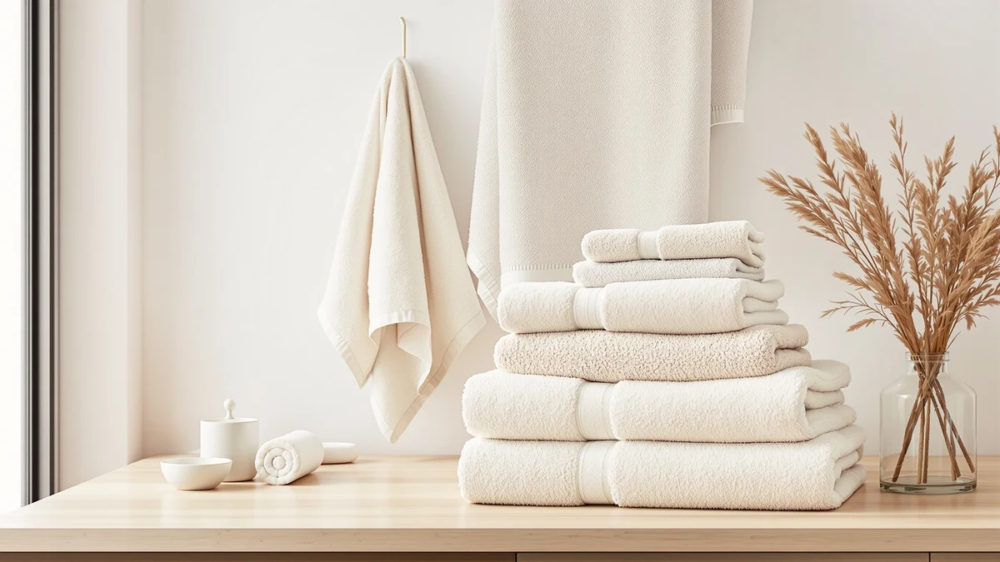

Best Bath Towels for Absorbency and Softness (2026)
Prices and picks verified as of August 2026. Independent, reader-supported reviews.


Quick Answer
We compared seven bath towel sets on cotton type, weight, and verified owner reviews to find the best bath towels for absorbency and softness. The White Classic Luxury White Bath Towel Set soaks up water fast, holds its softness through repeated washes, and costs less per towel than most sets in this roundup.
Our pick: Luxury White Bath Towel Set, $39.99 Check Price on Amazon
Bottom line: our top pick is the Luxury White Bath Towel Set of 8 Pieces - 100% Turkish Cotton at $39.99. The best budget option is the Utopia Towels 8 Piece Luxury Towel Set at $27.99.
Things to Know Before You Buy
- Cotton still wins for daily absorbency and softness. Six of the seven sets here are 100% cotton; the one microfiber option trades some softness for a faster dry time.
- Piece count changes the math on price. An 8-piece set at $30.39 can cost less per towel than a 4-piece set at $39.99, so check what's actually included before comparing sticker prices.
- Size matters more than most buyers expect. Standard sets run around 27x54 inches, while oversized options reach 30x60 inches for full wraparound coverage.
- New cotton towels need a few washes to hit peak absorbency. Manufacturing residue coats the fibers at first; two or three wash cycles without fabric softener clear it.
The best bath towels for absorbency and softness solve a problem most people never think about until they're standing in a cold bathroom, dripping, with a towel that moves water around instead of soaking it up. A towel is the last thing you touch before you get dressed, and a thin, scratchy one turns a quick dry-off into a daily annoyance.
We researched seven popular bath towel sets, comparing cotton type, weight description, piece count, and price against verified owner reviews on Amazon. We looked at how each set is described for absorbency, how buyers say it holds up after repeated washing, and how the price breaks down per towel once you account for set size.
For most households, the White Classic Luxury White Bath Towel Set ($39.99) is the pick: an 8-piece 100% cotton set that balances absorbency, softness, and price better than the rest of this list. If you want a smaller set with fewer pieces, American Soft Linen's 6-piece option is worth a look, and if a fast dry time matters more than plush softness, the NALIVO microfiber set covers that instead.
Why You Should Trust Us
Ilane Tall has covered bath and home textile products across this site for several years, focused specifically on how bath towels perform for absorbency and softness rather than how they photograph. We don't run a physical testing lab and we don't claim to own every towel in this roundup. What we do is compare manufacturer specs, listed materials, and verified buyer reviews on Amazon against each other, then flag where the numbers or the owner feedback don't add up.
We keep no paid relationship with any brand featured here. The affiliate links on this page earn this site a small commission if you buy through them, and that commission has no bearing on which sets we recommend or how we rank them.
How We Picked
We started from a wider list of bath towel sets sold on Amazon and narrowed it by material first: only 100% cotton and true microfiber sets made the cut, since those are the two materials that hold up best on absorbency and softness for everyday use. We dropped sets with vague material descriptions, unclear piece counts, or a price that didn't match the contents of the box.
That left seven sets covering three buyer needs: a do-it-all option for most bathrooms, smaller and larger sizes for different households, and one microfiber pick for buyers who prioritize a fast dry time over plush texture. Every set on this page was in stock and available through Amazon Prime at the time of publication.
How We Compared
We are a research-based review site. We don't buy, own, or physically test the products we cover, so instead we compare what's verifiable: listed material and weight, piece count, price per towel, and what verified Amazon buyers report after using each set at home.
For absorbency, we looked at how consistently owners described a set soaking up water on first use versus needing several washes to perform. For softness, we weighed material claims, 100% cotton versus microfiber, against recurring feedback in verified reviews about how a set felt after repeated laundering. We priced each set per towel, not per set, since piece count varies from four to eight across this list, and that changes which option is actually the better deal.
Our Picks

Luxury White Bath Towel Set
What we like
- 8 pieces of 100% cotton for $39.99, among the lowest per-towel prices in this roundup
- Cotton construction suited to daily absorbency
- Full set covers bath towels, hand towels, and washcloths in one purchase
- Classic white finish matches any bathroom decor
Flaws but not dealbreakers
- White-only color option, no shade choices
- Cotton towels need a few washes before absorbency peaks
- No microfiber option for buyers who want the fastest possible dry time
| Material | 100% cotton |
| Size | 8 Pieces Towel Set |
The White Classic Luxury White Bath Towel Set is our top pick because it does not ask you to trade one thing for another. It's 100% cotton, which is the material verified owner reviews most often link to strong absorbency and a soft hand-feel that holds up over repeated washing. At $39.99 for eight pieces, it works out to under $5 per towel, undercutting several smaller sets on this list despite covering more ground: bath towels, hand towels, and washcloths in a single order.
Owners describe the white finish as a straightforward match for any bathroom, though it is the only color offered, so anyone wanting a specific shade should look elsewhere on this list. Like most new cotton towels, reviewers note it takes two or three washes without fabric softener before it reaches full absorbency, a normal step for this material rather than a flaw specific to this set. For a household that wants the best bath towels for absorbency and softness without paying a premium, this is the set we'd point to first.

American Soft Linen Luxury 6
What we like
- 100% cotton construction for even absorbency
- Six generously sized pieces instead of a larger count of smaller towels
- Reviewers describe American Soft Linen's cotton sourcing consistently across the brand's sets
- Holds up to repeated washing according to owner feedback
Flaws but not dealbreakers
- Same $39.99 price as our top pick but with two fewer pieces
- No washcloths included in this particular set
- Limited color range compared to some competitors
| Material | 100% cotton |
| Size | 6 Pc Towel Set |
American Soft Linen's 6-piece Luxury set takes a different approach than our top pick: fewer, larger towels instead of a full stack of smaller pieces. It is still 100% cotton, so the absorbency profile that verified buyers describe lines up closely with the rest of the cotton sets in this roundup. If your household prefers two or three substantial bath towels over a crowded linen closet, this set fits that preference better than an 8-piece box.
At $39.99, it costs the same as our top pick while including two fewer pieces, which puts its per-towel price higher once you do the math. That is the trade-off: you get larger individual towels rather than more of them. Owner reviews describe the cotton holding its softness wash after wash, which matches what we'd expect from a reputable 100% cotton set at this price point.

Utopia Towels 8 Piece Luxury
What we like
- Lowest total price in this lineup at $30.39 for 8 pieces
- 100% cotton material for reliable absorbency
- Full 8-piece set covers a household's daily rotation
- Frequently referenced in verified reviews as a dependable everyday option
Flaws but not dealbreakers
- Lower price point than our top pick, so expect a slightly less refined hand-feel
- Cotton still needs a few washes to reach full absorbency
- No microfiber option for fast-drying use cases
| Material | 100% cotton |
| Size | 8 Pieces Towel Set |
Utopia Towels' 8-piece Luxury set is the value play in this roundup. At $30.39 for eight pieces, it comes in under $4 per towel, the lowest per-towel cost of any set here, our top pick included. It's still 100% cotton, so it delivers the same basic absorbency profile as the pricier sets on this list; you are mainly paying less for the same core material rather than getting a fundamentally different product.
Verified reviews describe it as a solid, no-surprises option for a household that goes through towels quickly, whether that's a family bathroom, a rental property, or a first apartment. It won't out-perform the White Classic set on refinement, but for the price, it covers the basics of absorbency and softness without asking you to spend an extra ten dollars for pieces you may not need.

American Soft Linen Luxury 4
What we like
- 27x54 inch standard sizing fits most linen closets and towel bars
- 100% cotton for dependable absorbency
- Four pieces is enough rotation for one or two people
- Same American Soft Linen cotton quality as the brand's larger set
Flaws but not dealbreakers
- Only four pieces, so a larger household will run through them faster between wash days
- $39.99 for four towels is a higher per-towel price than our top pick
- No hand towels or washcloths included
| Material | 100% cotton |
| Size | 27x54" Bath Towel Set |
This is the smaller sibling to American Soft Linen's 6-piece set: four standard 27x54 inch bath towels, 100% cotton, at the same $39.99 price. For a single person, a couple, or a guest bathroom that only needs to cover one or two showers a day, four towels is enough rotation without the extra pieces you would not use.
The trade-off is per-towel cost. At $39.99 for four pieces, it works out to roughly $10 per towel, well above the White Classic set's under-$5 pricing. What you get for that premium is standard sizing that fits typical towel bars and linen closets without the bulk of an oversized towel, plus the same cotton absorbency profile verified buyers report across American Soft Linen's other sets.

NALIVO Extra Large Bath Towel
What we like
- Microfiber dries significantly faster between uses than any cotton set on this list
- Six pieces for $47.58, useful for households that wash towels less frequently
- Compact when packed, useful for travel or gym bags
- Doesn't hold onto moisture the way cotton can in humid bathrooms
Flaws but not dealbreakers
- Highest price per set in this roundup at $47.58
- Microfiber has a different, less plush hand-feel than 100% cotton
- Some verified reviews mention static cling compared to cotton alternatives
| Material | Microfiber |
| Size | 6Piece Towel Set |
Every other set in this roundup is 100% cotton, and NALIVO's Extra Large set is here specifically because it isn't. Microfiber trades some of the plush hand-feel of cotton for a real practical advantage: it dries far faster between uses. If your bathroom stays humid or your towel bar doesn't get much airflow, that matters more day to day than a slightly softer hand-feel.
At $47.58 for six pieces, it's the most expensive set here, and reviewers note the texture reads as noticeably different from cotton, less plush, more slick. That's the expected trade for a material that resists holding onto moisture in the first place. For gym bags, travel, or a household that wants to wash towels less often without them turning musty in between, this is the one set on this list built for that specific need rather than for the softest possible feel.

Cotton Paradise 100% Cotton Turkish
What we like
- Turkish cotton is associated with a plusher, more absorbent feel than standard cotton
- Priced at $35.99, below both American Soft Linen sets
- Six pieces cover a normal household rotation
- Verified reviews describe a noticeably soft texture out of the box
Flaws but not dealbreakers
- Turkish cotton sets sometimes cost more to replace long term than standard cotton
- Six pieces is a middle-of-the-road count, not the largest or smallest set here
- Still needs a few washes to reach full absorbency, same as any new cotton towel
| Material | 100% cotton |
| Size | 6 Piece Towel Set |
Cotton Paradise's Turkish cotton set leans into softness specifically. Turkish cotton has longer fibers than standard cotton, and that shows up in verified reviews as a plusher, more absorbent hand-feel right out of the packaging compared to some of the more basic cotton sets on this list. At $35.99 for six pieces, it undercuts both American Soft Linen options while aiming at a more premium feel.
If softness matters most to you, this is the set among our seven that reviewers most consistently single out for texture. It still needs the same two or three initial washes as any new cotton towel to reach full absorbency, and it won't out-price the Utopia set on a pure per-towel basis, but for buyers weighing the best bath towels for absorbency and softness against feel alone, this is the strongest softness pick here.

Tens Towels Pack of 4
What we like
- 30 x 60 inch sizing is noticeably larger than the 27x54 inch standard
- 100% cotton for consistent absorbency
- Full wraparound coverage for taller or larger users
- Priced at $35.99 for four oversized pieces
Flaws but not dealbreakers
- Only four pieces, so a busy household will cycle through them faster
- Larger towels take up more space on a standard towel bar
- Oversized towels can take longer to dry than standard-size cotton towels
| Material | 100% cotton |
| Size | 30 X 60 Inches |
Tens Towels' 4-pack is the largest towel on this list by a clear margin: 30 x 60 inches, compared to the roughly 27x54 inch standard size most of the other sets use. That extra fabric matters if you're tall, if you like a towel that wraps fully around your body, or if you prefer more coverage after a shower.
At $35.99 for four pieces, the per-towel price sits in the middle of this roundup, closer to the Cotton Paradise set than to the budget Utopia option. The trade-off with any oversized cotton towel is dry time: more fabric means more moisture to shed between uses, so expect it to take a bit longer on the bar than the standard-size sets here. For anyone whose priority is coverage over quick turnaround, that's a fair exchange.
Quick Comparison
| Product | Material | Price | Rating | Best for | Get it |
|---|---|---|---|---|---|
| Luxury White Bath Towel Set | 100% cotton | $39.99 | 4 | Most households | View on Amazon → |
| American Soft Linen Luxury 6 | 100% cotton | $39.99 | 4 | Fewer, larger towels | View on Amazon → |
| Utopia Towels 8 Piece Luxury | 100% cotton | $30.39 | 4 | Best value per towel | View on Amazon → |
| American Soft Linen Luxury 4 | 100% cotton | $39.99 | 4 | Singles and guest baths | View on Amazon → |
| NALIVO Extra Large Bath Towel | Microfiber | $47.58 | 4 | Fast drying | View on Amazon → |
| Cotton Paradise 100% Cotton Turkish | 100% cotton | $35.99 | 4 | Softest feel | View on Amazon → |
| Tens Towels Pack of 4 | 100% cotton | $35.99 | 4 | Full-body coverage | View on Amazon → |
What makes a bath towel more absorbent?
Material and weight do most of the work.
Is cotton or microfiber better for softness?
For a plush, traditional hand-feel, cotton generally wins, and Turkish cotton sets like Cotton Paradise's lean further into that softness than standard cotton.
The Competition
We looked at more than these seven sets before narrowing this list. Linen-blend towels came up often in search results, but linen alone doesn't absorb water as well as cotton or microfiber, so we left pure-linen sets off this page even at attractive prices. Several bamboo-viscose blends showed up too, marketed heavily on softness claims; verified reviews for those sets were mixed on durability after repeated washing, and the fiber content on the listings was often vague enough that we couldn't confirm what buyers were actually getting.
We also passed on a handful of ultra-budget packs priced under $20 for six or more pieces. The math looked appealing on paper, but owner reviews for that price bracket consistently mentioned thin, sandpapery towels that struggled with absorbency from the first use, which defeats the point of a bath towel. Linen and bamboo-viscose sets remain worth a look for buyers focused on breathability or eco-material sourcing specifically; for absorbency and softness, the seven sets above held up better by comparison.
For a roundup built around the best bath towels for absorbency and softness, the White Classic Luxury White Bath Towel Set held up better across price, material, and verified reviews than any competitor we considered, cotton alternative or otherwise, which is why it remains our top recommendation.
Frequently Asked Questions
What makes a bath towel more absorbent?
Material and weight do most of the work. 100% cotton fibers hold water well due to their structure, and heavier, denser weaves hold more water per towel than thin, lightweight fabric. Brand new cotton towels also need two or three washes without fabric softener before they reach full absorbency, since manufacturing residue on the fibers blocks water at first.
Is cotton or microfiber better for softness?
For a plush, traditional hand-feel, cotton generally wins, and Turkish cotton sets like Cotton Paradise's lean further into that softness than standard cotton. Microfiber, like the NALIVO set in this roundup, trades some of that plushness for a faster dry time, which matters more in humid bathrooms or for frequent travel use.
How many bath towels does a household actually need?
A common rule is two to three towels per person, which covers one in use, one drying, and one as backup during laundry day. That's why piece count matters as much as price when comparing the best bath towels for absorbency and softness: an 8-piece set at a lower price can outlast a smaller 4-piece set that looks cheaper per package but costs more per towel.